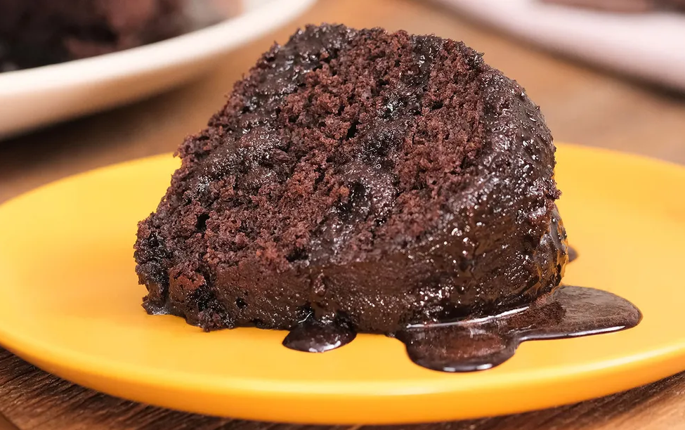

voltar
Receita de Bolo de Chocolate

Ingredientes para a Massa
- 3 ovos
- 1 e meia xícara de chá de açúcar
- Meia xícara de chá de óleo
- 1 xícara de chá de chocolate em pó
- 2 xícaras de chá de farinha de trigo
- 1 xícara de chá de água quente
- 1 colher de sopa de fermento em pó
Modo de Preparo da Massa
- Em uma tigela, coloque 3 ovos, 1 e meia xícara de chá de açúcar,
meia xícara de chá de óleo, 1 xícara de chá de chocolate em pó e 2
xícaras de chá de farinha de trigo. Misture delicadamente os ingredientes.
-
Em seguida, adicione 1 xícara de chá de água quente, 1 colher de sopa
de fermento em pó e bata até ficar homogêneo.
-
Transfira a massa para uma forma untada e enfarinhada com uma mistura
de farinha de trigo e chocolate em pó. Leve para assar em forno preaquecido
a 180 graus Celsius por 40 minutos.
Ingredientes para a Cobertura
- 1 e meia xícara de chá de leite
- Meia xícara de chá de chocolate em pó
- 1 colher de sopa de manteiga
- 1 xícara de chá de açúcar
Modo de Preparo da Cobertura
-
Em uma panela, coloque 1 e meia xícara de chá de leite, meia xícara de chá
de chocolate em pó, 1 colher de sopa de manteiga e 1 xícara de chá de açúcar.
Misture, ligue o fogo e deixe ferver.
-
Despeje a calda no bolo ainda quente e sirva em seguida.